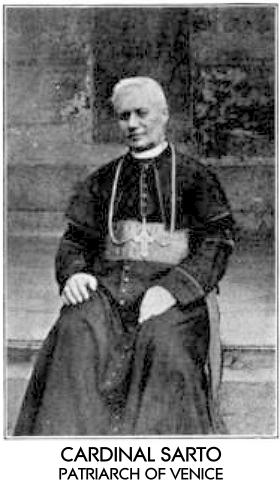

THE CURIOUS CASE OF CARDINAL SARTO'S HOMILY
Does the pope speak?
It is Jesus Christ who is speaking!
"The Pope is not simply the representative of Jesus Christ. On the contrary, he is Jesus Christ Himself, under the veil of the flesh, and who by means of a being common to humanity continues His ministry amongst men ... Does the Pope speak? It is Jesus Christ Who is speaking. Does he teach? It is Jesus Christ Who teaches. Does he confer grace or pronounce an anathema? It is Jesus Christ Himself Who is pronouncing the anathema and conferring the grace. Hence consequently, when one speaks of the Pope, it is not necessary to examine, but to obey: there must be no limiting the bounds of the command, in order to suit the purpose of the individual whose obedience is demanded: there must be no cavilling at the declared will of the Pope, and so invest it with quite another than that which he has put upon it: no preconceived opinions must be brought to bear upon it: no rights must be set up against the rights of the Holy Father to teach and command; his decisions are not to be criticized, or his ordinances disputed. Therefore by Divine ordination, all, no matter how august the person may be — whether he wear a crown or be invested with the purple, or be clothed in the sacred vestments: all must be subject to Him Who has had all things put under Him."
Source: Evangelical Christendom, Vol. 49, January 1, 1895, pg. 15, the organ of the Evangelical Alliance, published in London by J. S. Phillips. (See also Index page, pg. 14)
Frequently quoted, this blasphemous claim is attributed to the inaugural sermon (given in St. Mark's) of Cardinal Giuseppe Melchior Sarto, Patriarch of Venice (1893-1903). His elevation to Cardinal and Patriarch, in June of 1893 by Pope Leo XIII, was contested and delayed for 18 months by the Italian government, who claimed the right of exequatur, but withheld their approval. (See Evangelical Christendom, Vol. 48, May 1, 1894, pg. 142.) During that time, Cardinal Sarto was even denied entry into the city of Venice. King Humbert finally relented September 5th of 1894, giving his assent to the appointment. In his first pastoral letter to the Venetians, Cardinal Sarto then wrote:
"Harmony between the different social classes must be re-established; peace must reign on earth. This is the task I intend to perform for you; this is the duty I promise to fulfil that all may once again be subject to the dominion of God, Jesus Christ and His Vicar on earth."
Source: Saint Pius X, The New Italian Life Of The Saint, by Fr. Hieronymo Dal-Gal, translated and adapted by Rev. Thomas F. Murray, M.A., fourth revised impression, published by M. H. Gill and Son Ltd., 50 Upper O'Connell Street, 1954, pg. 104.
Dal-Gal continues:
"On the afternoon of November 24th 1894, a steamboat of the Royal Marine carried Cardinal Sarto over the peaceful waters of the Grand Canal, stopping in the close vicinity of the Golden Cathedral of St. Mark. All the bells of the city announced the joy and triumph of the multitudinous throngs lining the canals and crowding at the windows of the palaces. They waved their white flags beneath the rich marble balconies and shouted a prolonged chorus of jubilation as the Cardinal in his scarlet robes passed by, blessing them as a father does his children. ... Midst such festivity, flourish and magnificence did the humble Patriarch enter the city of the Doges; ... [pg. 107] Cardinal Sarto's first real meeting with the Venetians took place the following morning when he celebrated Solemn High Mass in the Cathedral of St. Mark and addressed his first words to them from the pulpit. The Cathedral was brilliantly illuminated, and a huge crowd of people hastened to take a closer glance at their new Patriarch and listen to his words."
Source: Ibid, pgs. 106 & 107.
As first reported by Evangelical Christendom, the Cardinal's homily was, in context, boldly asserting the Pope to be the sole authority to appoint the Princes of the Roman Catholic Church. Cardinal Sarto later became Pope Pius X (1903-1914). His sermon was also cited in:
-
Catholique Nationale, July 13, 1895 (Reported in the Protestant Church Review of October 3, and November 14th, 1895, and the India Watchman, in The Friend, A Religious And Literary Journal, Volume LXIX, 1896, Philadelphia, pg. 154.)
- Daniel and the Revelation: The Chart of Prophecy and Our Place In It, A Study of the Historical and Futurist Interpretation, by Joseph Tanner, published in London by Hodder and Stoughton, 1898, pages 153, 154.
In Publications of the Catholic Truth Society, Volume 29, 1896, The Catholic Truth Society of London published a booklet by Rev. Sydney F. Smith S. J. titled Does The Pope Claim To Be God. On pages 10 and 11 it reveals that Cardinal Sarto was queried about the alleged homily, and that he gave the following reply in a letter written sometime before Jan. 10, 1896:
"... I have read all the homilies I have made since my coming here in Venice, and only in the sermon for the anniversary of the election of the Holy Father, I said these exact words: 'The Pope represents Jesus Christ Himself, and therefore is a loving father. The life of the Pope is a holocaust of love for the human family. His word is love. Love, his weapons; love, the answer he gives to all who hate him; love, his flag, —i.e., the Cross, which signed the greatest triumph on earth and in heaven.' ... &c."
The Pope at the time, Leo XIII, was elected on February 20th, 1878, so the date referred to by Cardinal Sarto for his homily celebrating the Pope's anniversary would have been on or about February 20th of 1895, while the blasphemous homily attributed to him was given at the first Mass he celebrated in St. Mark's, which was on Sunday November 25th, 1894, some three months earlier. Note that the above article in Evangelical Christendom was already in print and on the street some two months before Cardinal Sarto gave the sermon he offers as the genuine one! I find that very curious indeed.
Clearly when Cardinal Sarto was contemplating his reply, he was not aware of the Evangelical Christendom article of January 1st, 1895, that essentially pinpointed the homily as the one he gave the day after he had so triumphantly entered the city of Venice as its new Patriarch, a mere five weeks earlier. And who would need to check their records in order to ascertain if they had ever given such a sermon and made such claims? I would suggest that rather than being a credible denial, Cardinal Sarto (Pius X) offered an evasive and inadequate reply that does not exonerate him, rather it tends to support the reported blasphemous homily as being completely genuine.
A new and revised edition of Rev. Smith's booklet titled Does The Pope Claim To Be Divine? published in 1929 makes no mention of, or defense of, Cardinal Sarto's homily. Very curious indeed.

{kind=link}
{kind=link}
{kind=link}
{kind=link}